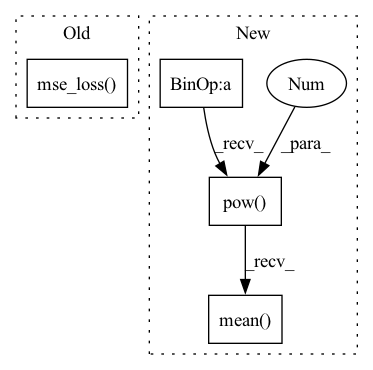

Pattern ID :2427
Before Change
target_q = self.target_model(next_state).max(1)[0] * (1-done) + reward
q = self.model(state)
q = q.gather(1, action.unsqueeze(-1)).squeeze(-1)
q_loss = F.mse_loss( q, target_q)
self.q_optimizer.zero_grad()
q_loss.backward()
if self.use_grad_clip:After Change
target_q = self.target_model(next_state).max(1)[0] * (1-done) + reward
q = self.model(state)
q = q.gather(1, action.unsqueeze(-1)).squeeze(-1)
q_loss = ((q - target_q).pow(2)*weights).mean()
td_error = torch.abs(q.detach() - target_q.detach()) // used in prioritized experience replay
self.q_optimizer.zero_grad()
q_loss.backward()In pattern: SUPERPATTERN
Frequency: 3
Non-data size: 4
Instances Fragment ID: 10280798
Project Name: karlxing/rlcodebase
Commit Name: 3dff497e3c5cff01ef5340a2240d90eae0c5b8d5
Time: 2020-10-11
Author: jinweixing1006@gmail.com
File Name: rlcodebase/policy/dqn_policy.py
M Class Name: DQNPolicy
N Class Name: DQNPolicy
M Method Name: learn_on_batch(2)
N Method Name: learn_on_batch(2)
M Parent Class: BasePolicy
N Parent Class: BasePolicy
M File Name: rlcodebase/policy/dqn_policy.py
N File Name: rlcodebase/policy/dqn_policy.py
M Start Line: 38
M End Line: 47
N Start Line: 32
N End Line: 49
Before Change
self.embed.data.copy_(self.embed_avg / self.cluster_size.unsqueeze(1))
// compute loss for embedding
loss = self.beta * F.mse_loss( z_q.detach(), z)
// preserve gradients
z_q = z + (z_q - z).detach()
// reshape back to match original input shapeAfter Change
embed_normalized = self.embedding.embed_avg / cluster_size.unsqueeze(0)
self.embedding.weight.data.copy_(embed_normalized)
loss = self.beta * (z_q.detach() - z).pow(2).mean()
z_q = z + (z_q - z).detach()
z_q = z_q.permute(0, 3, 1, 2).contiguous()
return z_q, loss, (perplexity, encodings, encoding_indices)
Fragment ID: 10280799
Project Name: tgisaturday/dalle-lightning
Commit Name: 7a07ecfb269329aa84b6227289bec593ef24bfde
Time: 2021-07-28
Author: jamesk1228@gmail.com
File Name: pl_dalle/modules/vqvae/quantize.py
M Class Name: EMAVectorQuantizer
N Class Name: EMAVectorQuantizer
M Method Name: forward(2)
N Method Name: forward(2)
M Parent Class: nn.Module
N Parent Class: nn.Module
M File Name: pl_dalle/modules/vqvae/quantize.py
N File Name: pl_dalle/modules/vqvae/quantize.py
M Start Line: 118
M End Line: 151
N Start Line: 67
N End Line: 96
Before Change
self.embedding.weight.data.copy_(embed_normalized.data)
//self.embedding.weight = nn.Parameter(embed_normalized)
// compute loss for embedding
loss = self.beta * F.mse_loss( z_q.detach(), z)
// preserve gradients
z_q = z + (z_q - z).detach()After Change
embed_normalized = self.embedding.embed_avg / cluster_size.unsqueeze(0)
self.embedding.weight.data.copy_(embed_normalized)
loss = self.beta * (z_q.detach() - z).pow(2).mean()
z_q = z + (z_q - z).detach()
z_q = rearrange(z_q, "b h w c -> b c h w").contiguous()
return z_q, loss, (perplexity, encodings, encoding_indices)
Fragment ID: 10280800
Project Name: tgisaturday/dalle-lightning
Commit Name: e387b61c8c640b56c7cbd241d8ec60ab1f022611
Time: 2021-08-12
Author: jamesk1228@gmail.com
File Name: pl_dalle/modules/vqvae/quantize.py
M Class Name: EMAVectorQuantizer
N Class Name: EMAVectorQuantizer
M Method Name: forward(2)
N Method Name: forward(2)
M Parent Class: nn.Module
N Parent Class: nn.Module
M File Name: pl_dalle/modules/vqvae/quantize.py
N File Name: pl_dalle/modules/vqvae/quantize.py
M Start Line: 85
M End Line: 118
N Start Line: 184
N End Line: 215